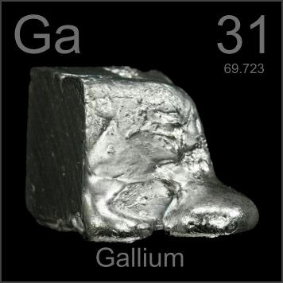

HOME
PREVIOUS
NEXT

Gallium
Atomic Weight: 69.723
Density: 5.904 g/cm3
Melting Point: 29.76 °C
Boiling Point: 2204 °C
Pick up gallium and it will melt in your hand: it liquefies at slightly above room temperature. A hair dryer created this Dali-esque cube. Alloys of gallium, indium and tin are replacing mercury in thermometers.